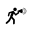

<link rel="import" href="../bower_components/polymer/polymer.html">
<script src="recorderjs/recorder.js"></script>
<polymer-element name="voice-recorder" verify attributes=''>
<template>
  <link rel='stylesheet' href="voice-recorder.css">
	
	
</template>
<script>
(function(){
	window.AudioContext = window.AudioContext || window.webkitAudioContext;
	var audioContext = new AudioContext();
	var audioInput = null,
	    realAudioInput = null,
	    inputPoint = null,
	    audioRecorder = null;
	var rafID = null;
	var analyserContext = null;
	var canvasWidth, canvasHeight;
	var recIndex = 0;

	function doneEncoding( blob ) {
	    var audio = document.createElement('audio');
	      audio.addEventListener('loadeddata', function(e) { 
	          audio.play();
	        }, false);
	      audio.addEventListener('error', function(e) {
	          console.log('error!', e);
	        }, false);
	      audio.src = webkitURL.createObjectURL(blob);
	}

	function initAudio(){
		if (!navigator.getUserMedia)
            navigator.getUserMedia = navigator.webkitGetUserMedia || navigator.mozGetUserMedia;
        if (!navigator.cancelAnimationFrame)
            navigator.cancelAnimationFrame = navigator.webkitCancelAnimationFrame || navigator.mozCancelAnimationFrame;
        if (!navigator.requestAnimationFrame)
            navigator.requestAnimationFrame = navigator.webkitRequestAnimationFrame || navigator.mozRequestAnimationFrame;
	    navigator.getUserMedia(
        {
            "audio": {
                "mandatory": {
                    "googEchoCancellation": "true",
                    "googAutoGainControl": "false",
                    "googNoiseSuppression": "false",
                    "googHighpassFilter": "false"
                },
                "optional": []
            },
        }, gotStream, function(e) {
            alert('Error getting audio');
            console.log(e);
        });
	}

	function gotStream(stream) {
	    inputPoint = audioContext.createGain();
	    // Create an AudioNode from the stream.
	    realAudioInput = audioContext.createMediaStreamSource(stream);
	    audioInput = realAudioInput;
	    audioInput.connect(inputPoint);
	    analyserNode = audioContext.createAnalyser();
	    analyserNode.fftSize = 2048;
	    inputPoint.connect( analyserNode );

	    audioRecorder = new Recorder( inputPoint );

	    zeroGain = audioContext.createGain();
	    zeroGain.gain.value = 0.0;
	    inputPoint.connect( zeroGain );
	    zeroGain.connect( audioContext.destination );
	}
	var isInitAudio = false;

	Polymer({
		blob: null,
	    ready:function(){
	    	if(!isInitAudio){
	        	initAudio();
	        	isInitAudio = true;
	        }
		},
		play:function(){
			doneEncoding(this.blob);
		},
		toggleRecording:function( e ) {
			var my = this;
		    if (e.toElement.classList.contains("recording")) {
		        // stop recording
		        audioRecorder.stop();
		        e.toElement.classList.remove("recording");
		        audioRecorder.getBuffers( 
		        	function(){
		        		audioRecorder.exportWAV( function(blob){
			        		my.blob = blob;
		        			doneEncoding(blob);
		        		} );
		        	}
		         );
		    } else {
		        // start recording
		        if (!audioRecorder)
		            return;
		        e.toElement.classList.add("recording");
		        audioRecorder.clear();
		        audioRecorder.record();
		    }
		}
	});
})();
</script>
</polymer-element>